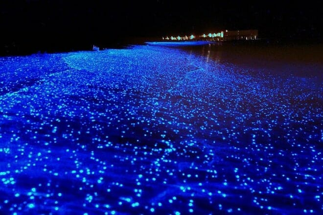
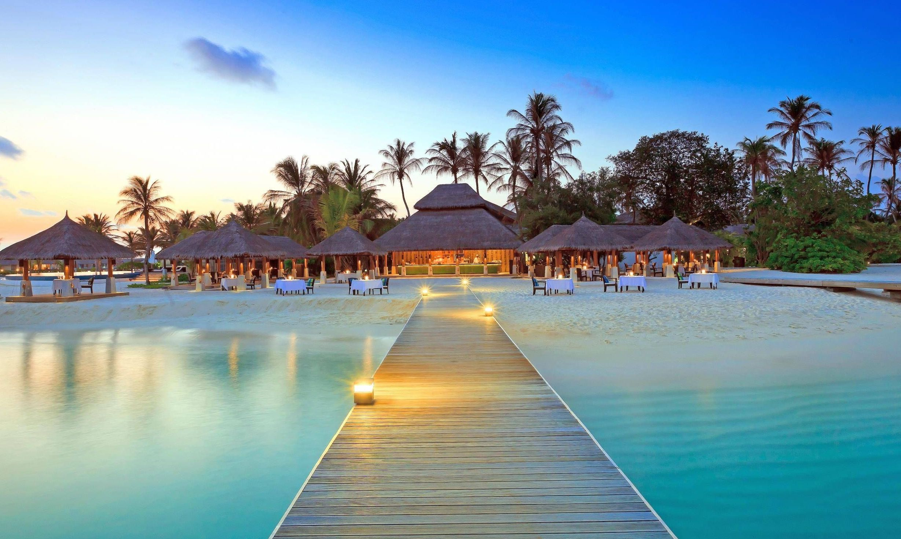
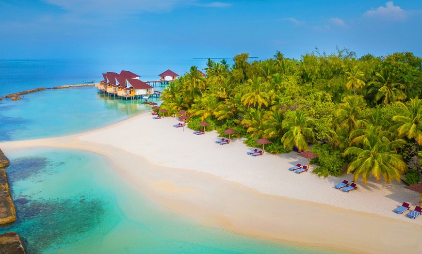
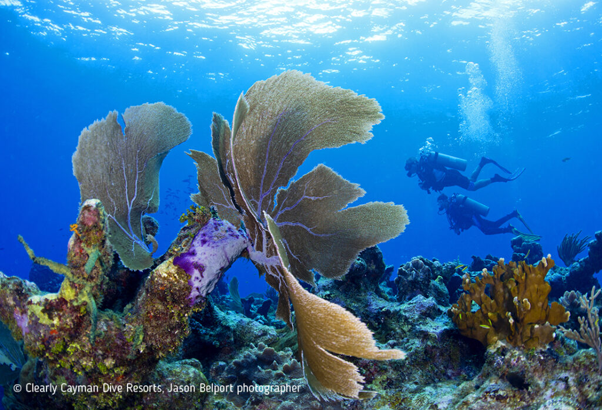

Vous rêvez de vous évader sur une île paradisiaque et faire le vide, plonger, vous prélasser sur le sable blanc… Rien de mieux qu’un voyage aux Maldives pour jouer au Robinson dans un cadre de rêve.
Plus de 1000 îles composent l’archipel des Maldives. Autant de petits bijoux à explorer… A vous les immenses étendues de sable immaculé, les lagons turquoise peuplés de poissons multicolores, les couchers de soleil aux airs de paradis. D’un atoll à l’autre, on se laisse envoûter par la beauté spectaculaire des coraux et par le bleu intact de l’eau. Allez d’île en île en hydravion, en bateau ou en dhoni et vivez des expériences magiques comme :
Plonger dans l’atoll d’Ari, l’un des plus beaux sites de plongée du monde
Dormir dans un bungalow sur pilotis au-dessus d’un lagon translucide
Se faire masser en regardant les poissons sous le plancher de verre du spa

L’île de Mudhdhoo
Sur une île des Maldives, se trouve une plage pas comme les autres. Elle est illuminée par une étrange lueur bleue qui s'intensifie dès que les vagues remuent.
Son secret ? La présence de millions de minuscules crustacés bioluminescents. C'est l'île de Mudhdhoo. En effet la plage s’illumine au crépuscule. Alors que faire aux Maldives ? Voir les plages de l’île Mudhdhoo est une activité immanquable des Maldives, et assez insolite !
Au grès d’une baignade, profitez notamment de la faune marine exceptionnelle qui promet un spectacle magique!

Malé
Île et surtout capitale des Maldives Male est également le centre commercial, culturel, administratif du pays. Cela implique qu'il soit le centre d'accueil de tout
un chacun souhaitant s'y rendre. Quoi de mieux alors que de nombreux et merveilleux hôtels où dormir aux abords de plages paradisiaques.La ville est parsemé entre autre par des mosquées, des espaces verts où flâner etc...
En outre il abrite le Musée National, dans le Sultan’s Park; Vous trouverez la bas un amassis de vestiges datant
de la période buddhiste et islamique du pays avec des armes , des vêtements , des bijoux et bien d'autres éléments historiques

L’atoll d'Ari
L’atoll Ari est un grand lagon ovale ponctué d’îles et de récifs, situé à environ 30 minutes d’avion de Malé, la capitale. Composé de 82 îles,
dont 36 seulement sont habitées et 26 sont des « îles-hôtels », c’est l’un des plus grands des 22 atolls des Maldives.
L’Atoll d’Ari est l’endroit idéal pour apprécier les fonds marins des Maldives dans toute leur splendeur
Si vous avez la chance de visiter l’atoll en période de pleine lune, des idées de clichés insolites s’offrent à vous. Le jeu des ombres et des reflets est tout à fait magnifique.

La plongée
Un voyage plongée aux Maldives vous garantit des sensations fortes et de l’émotion.
Ce n’est pas pour rien si chaque hôtel des Maldives est équipé d’un centre de plongée, et que chaque année, de plus en plus de visiteurs ont choisi la plongée comme thème de voyage.
Les amoureux de plongée seront aux anges durant leurs vacances aux Maldives. Tortues, raies, poissons tropicaux de toutes sortes mais aussi épaves fascinantes remplissent les fonds marins.
Surtout ne manquez pas de plonger avec les requins-baleines dans l’atoll de Rasdhoo, une expérience incroyable !